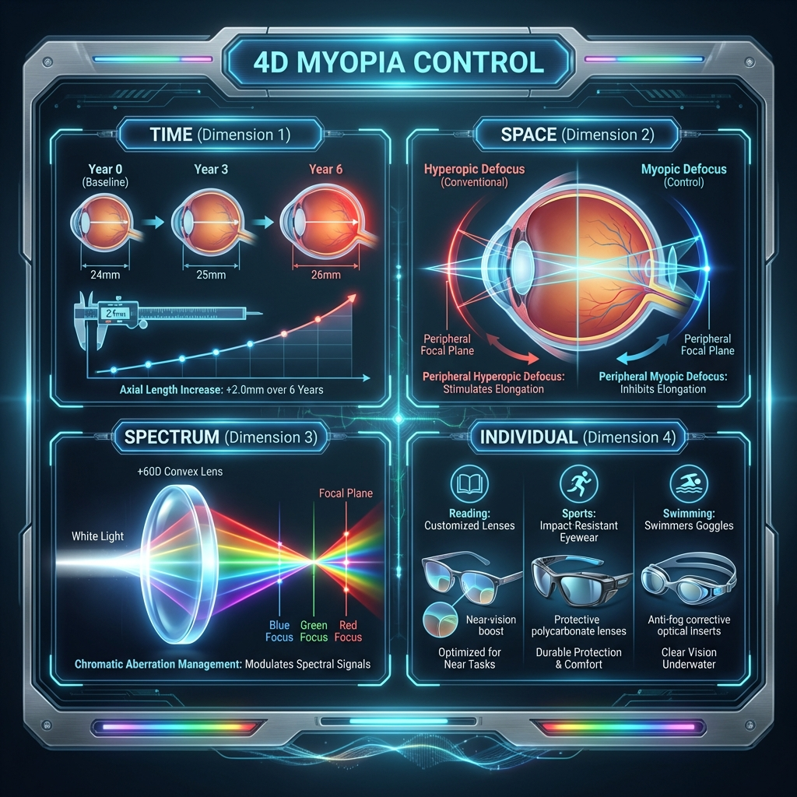
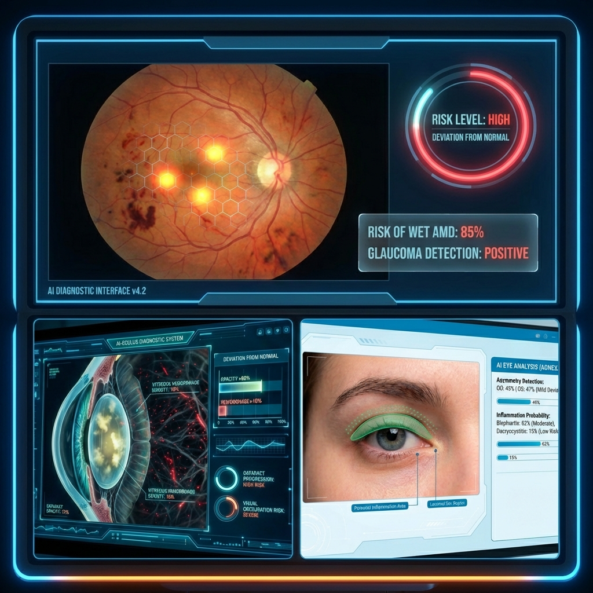

Vision Science & Biomedical Engineering
시각재활과 시각증강의
한계에 도전합니다
정밀 광학 계측, AI 기반 바이오마커 분석, 맞춤형 시각 솔루션을 통합하여 안과학의 새로운 지평을 열어갑니다.
01
정밀 광학 계측 Precision Optics적외선 구조화광(Structured Light) 및 고속 ROI 추적 시스템을 통해 각공막의 3D 형상부터 동공의 미세한 떨림까지 마이크로 단위의 초정밀 데이터를 포착합니다.
02
AI 바이오마커 분석 AI Analysis수집된 시각 데이터를 독자적인 딥러닝 모델로 해석하여, 퇴행성 뇌질환 및 안구 병변의 징후를 조기에 탐지하는 비침습적 디지털 바이오마커를 연구합니다.
03
맞춤형 시각 솔루션 Vision Solution개인별 안구 광학 스펙트럼과 라이프스타일 데이터를 통합 분석하여, 4D 근시 제어 및 개인맞춤형 시각 재활(Vision Rehabilitation) 솔루션을 제공합니다.
What We Study
연구 분야
4D 근시 제어 기술

주변부 망막 프로파일 및 안매체 경계면에서의 굴절을 고려한 초정밀 광선 추적 시뮬레이션을 통해, 개인별 최적화된 차세대 4D 근시 제어 기술을 연구합니다.
AI 질환 예측 및 진단

망막 혈관 구조, 사시각 편차, 눈꺼풀 처짐(Ptosis), 동공 반응 등 다차원 안구 생체 신호를 통합 분석하여 전신 질환의 발병 확률을 예측하는 AI 시스템을 개발합니다.
초정밀 각공막 3D 재구성

각막과 공막의 3D 프로파일을 정밀 계측 및 재구성하여, 맞춤형 공막 렌즈 처방과 인공 각막 제작을 위한 핵심 형상 데이터베이스를 구축합니다.